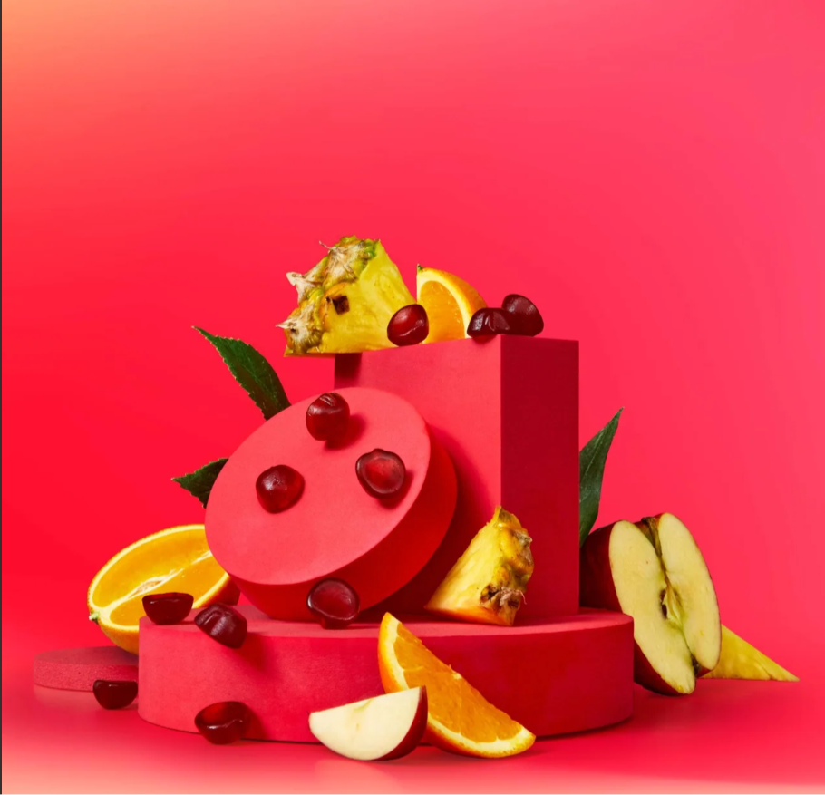
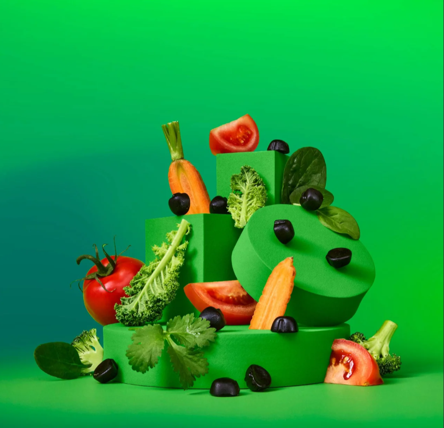
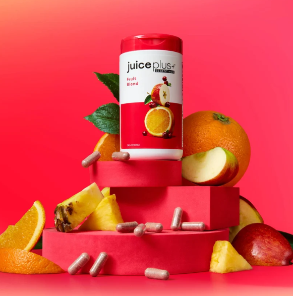

FAQs

Is this a multi vitamin?
No, the products are GMO free, Vegan, Whole food nutrition.
How can we get involved?
Email us for more information.
Is this just for children?
No. We do a full range of whole food nutrition for all ages More info
Where can I find product information?
See the nutrition and research page.
Are the products organic?
We use organically grown fruits and vegetables whenever possible, provided they meet out strict quality standards. However, because organic sourcing is not always available at the level of quality we require, our products are not certified organic.
Are the products vegan?
The capsules and chewables, as sold, are suitable for a vegan diet
Can I consume the products if I have an intolerance to gluten?
We can confirm that all the products are gluten-free, containing gluten at levels below 20ppm, in accordance with EU Regulations on this subject.
Can I consume the products if I have an intolerance to lactose?
The products are lactose-free.
Can I consume the products if I have allergies or intolerances?
If there are specific ingredients that you need to avoid due to your allergy or intolerance, please take a look at our product labels (available on our website) to check whether they are present in our products. Ingredients that are considered common allergens under EU food law are highlighted in bold, but please do check the ingredients list carefully for any ingredient that is of concern to you with your specific allergy/intolerance.
If you have any concerns about the suitability of a food for you, due to allergies or other medical conditions, please always take a copy of the product information/label and discuss the matter with your doctor or other healthcare professional.
Do the products contain any synthetic ingredients
Our products are developed with a focus on minimally processed, plant-based, whole-food ingredients. We aim, where possible, to use ingredients that are minimally processed and sourced from nature, within all other legal requirements.
products are free of:
• Preservatives
• Synthetic colourings
• Chemical stabilisers
• GMO ingredients
How does ordering work?
A simple repeat ordering system that gets delivered directly to your organisation. Te health crew will get you started and will be at the end of the phone if you have any issues. We will also do scheduled follow up calls to ensure all is going smoothly.


